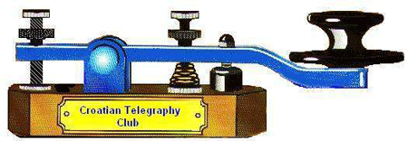

CW Club in Croatia:
Croatian Telegraphy Club is International Radio Amateur´s Association with free membership for telegraphy lovers across the world.
CTC frequencies: 3.530 - 7.015 - 14.030 - 21.030 - 28.030 MHz .
Every second Friday in December from 00:00 UT to 24:00 UT we can get together on these frequencies because this is CTC's Birthday.